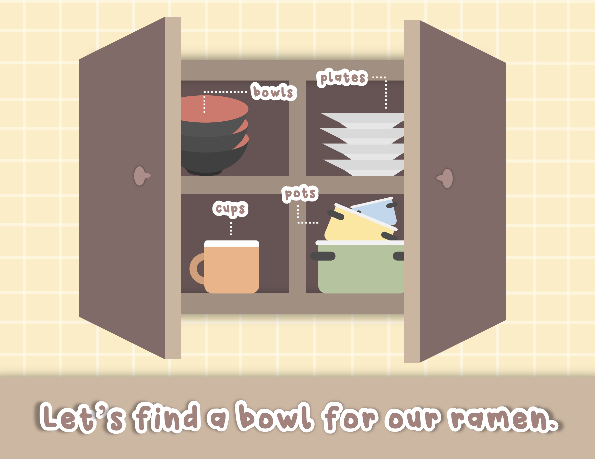
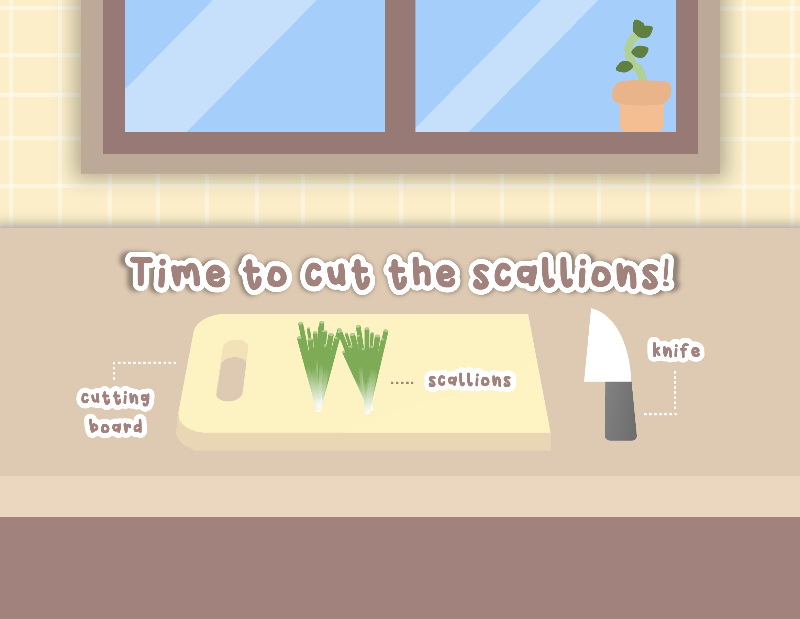
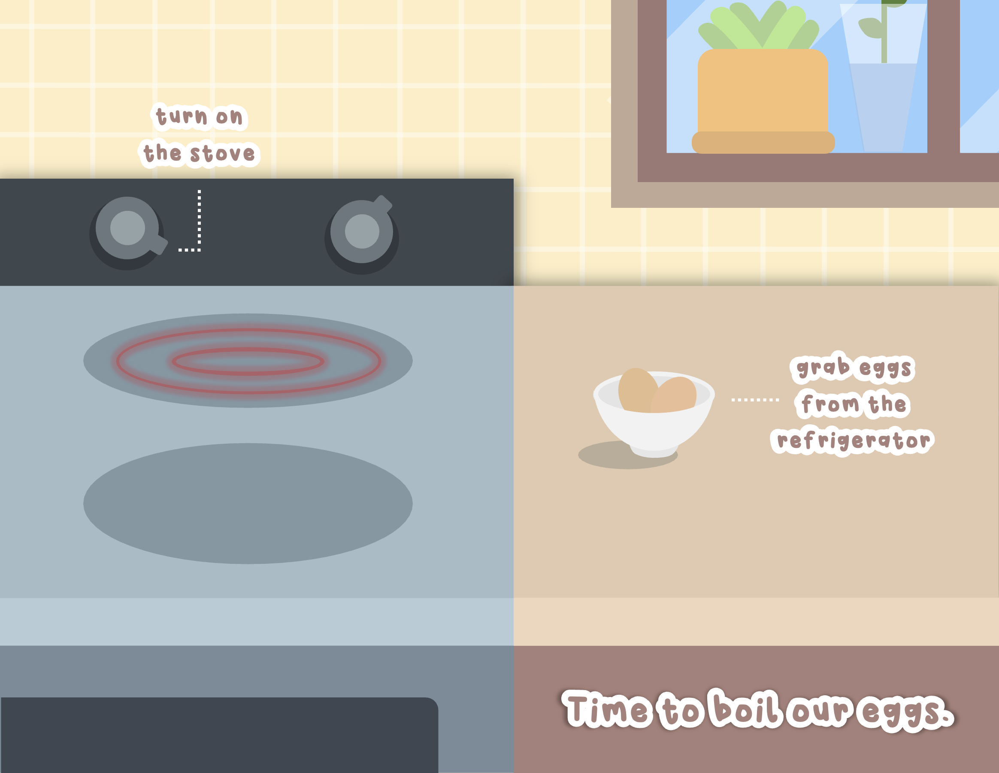
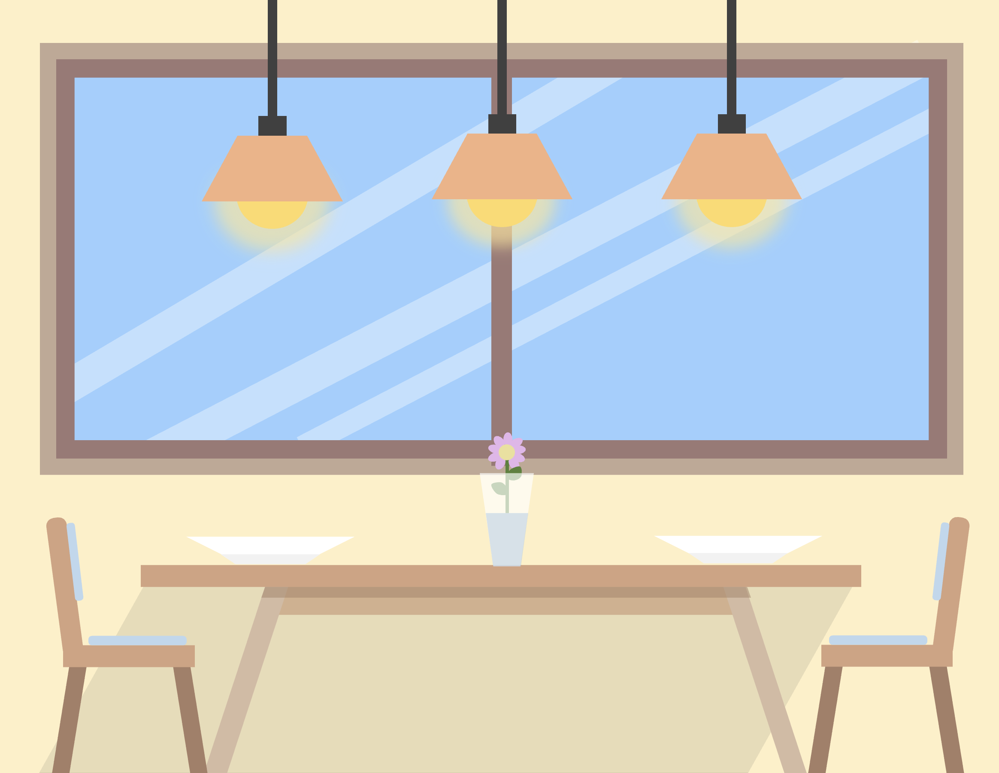
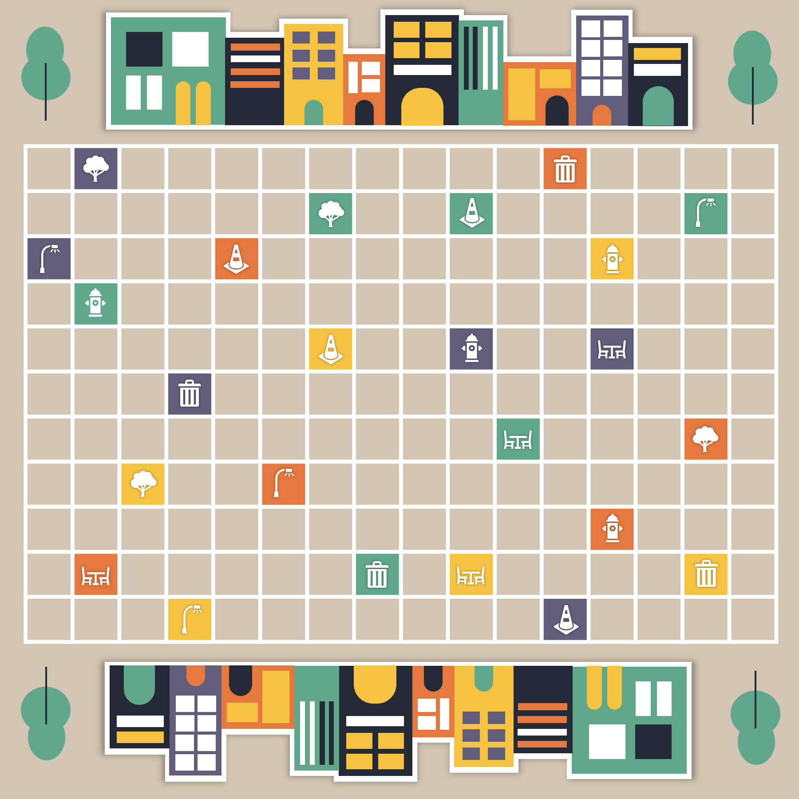

There are numerous testing tools that you can use to evaluate the accessibility of your website.
By putting in your site URL, WAVE provides you with a visual representation of the portions of your website that could use improvement. WAVE will highlight the sections of your website that fail to meet the WCAG standards
   By putting in your site URL, WAVE provides you with a visual representation of the portions of your website that could use improvement. WAVE will highlight the sections of your website that fail to meet the WCAG standards
